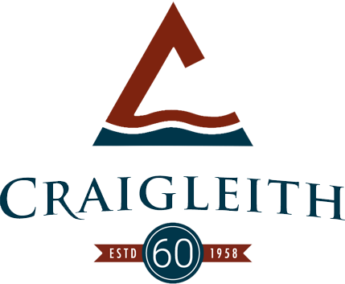
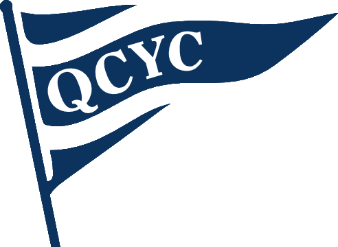

|  |
Under 10 Ski Coach
Craigleith Ski Club - The Blue Mountains
- Experienced racer deploying my strong skills to coach entry level ski racing to a team of eight and nine-year olds, serving as a positive role model for team participants and community members.
- Support on hill activities including assisting the maintenance crew to set up protective netting on the hills and working on ski courses for racers.
- Support and encourage young athletes at some of the first races of their ski career - which can be some of the most important races in shaping their love of ski-racing.
|
|  |
Sailing Instructor
Queen City Yacht Club - Algonquin Island, Toronto
- Taught CANSail 1 & 2 athletes sailing skills, ensured safety in boats, and motivated athletes to improve their skills. Skills taught ranged from points of sail to proper tacking techniques. Also gained experience teaching CANSail 3 & 4 athletes filling in for instructors as needed.
- Led on-shore activities including various team building games such as volleyball, soccer, "opti-ball", etc.
- Effective problem solver and strong ability to manage any issues that arose with boats on the water.
- Regularly maintained dinghies including the Club 420 and the Laser Pico.
|
 |
Roof Shingler
Self Employed - Toronto, Ontario
- Through my own initiative, developed skills to install, repair, and replace single-ply roofing systems on small roofs that big roofing companies refused to roof. Independently solicited work and completed a number of projects.
|